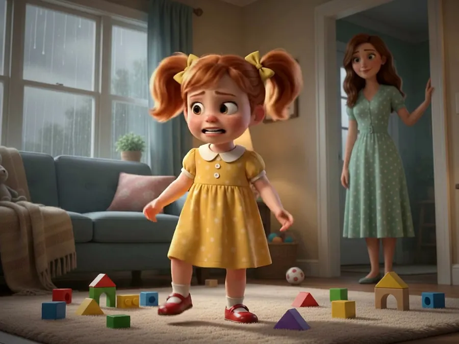
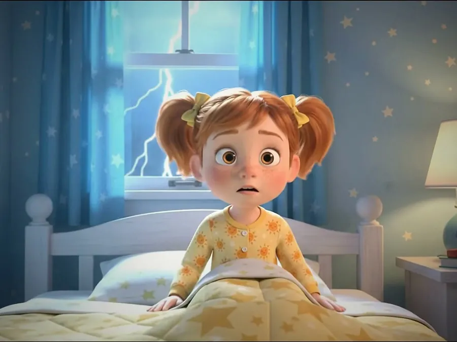
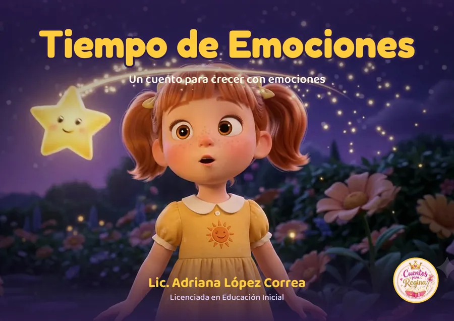
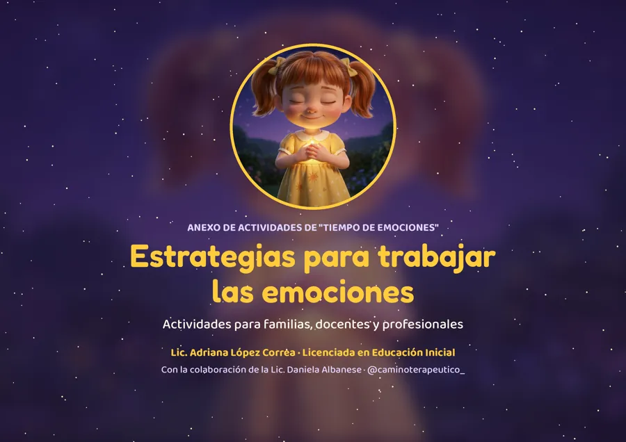

Alegría
Los días de sol, la plaza, la calesita y los paseos en familia.
Un cuento animado para crecer con emociones. Para ver, leer y conversar en familia y en el aula.
Sol es una nena que vive las emociones como el clima: días de sol que le dan alegría, días de lluvia que la ponen triste o enojada y noches de tormenta que le dan miedo. Con su familia descubre que todas las emociones vienen y van, como las olas del mar, y que todos tenemos una estrellita interior.
Cada emoción tiene su momento en el cuento. Son una gran puerta para preguntarles a los chicos cómo se sienten ellos.
Los días de sol, la plaza, la calesita y los paseos en familia.
Cuando llueve y no se puede salir a jugar.

Enojarse está bien. Lo importante es qué hacemos con ese enojo.

Las noches de tormenta, hasta que llega el abrazo de mamá.
«Lo importante es encontrar esa lucecita, esa estrellita interior que todos tenemos.»
El libro ilustrado para leer en la tablet, el celular o la compu, y un cuadernillo de estrategias para acompañar las emociones de los chicos.

El cuentoEl cuento completo de Sol, ilustrado página por página con las imágenes de la película.
Descargar el cuento
Para familias y docentesActividades y propuestas para hacer después del cuento, en casa o en el aula. Con la colaboración de la psicóloga Lic. Daniela Albanese.
Descargar estrategiasDescarga gratuita para leer en familia y en el aula. Prohibida su venta o modificación.
«Tiempo de Emociones» nació desde la educación inicial para ayudar a los chicos a reconocer, nombrar y acompañar lo que sienten.
Cuadernillo elaborado con la colaboración de la psicóloga Lic. Daniela Albanese · @caminoterapeutico_
Autora de «Tiempo de Emociones». Además de escribirlo, le puso la voz al cuento animado.
Producción de la película animada y del libro ilustrado de Cuentos para Regina.
Colaboró en el cuadernillo de actividades para familias, docentes y profesionales. @caminoterapeutico_
Fragmentos del cuento, ideas para conversar con los chicos y los próximos estrenos.
Escribinos y te contamos cómo trabajarlo con tu grupo.